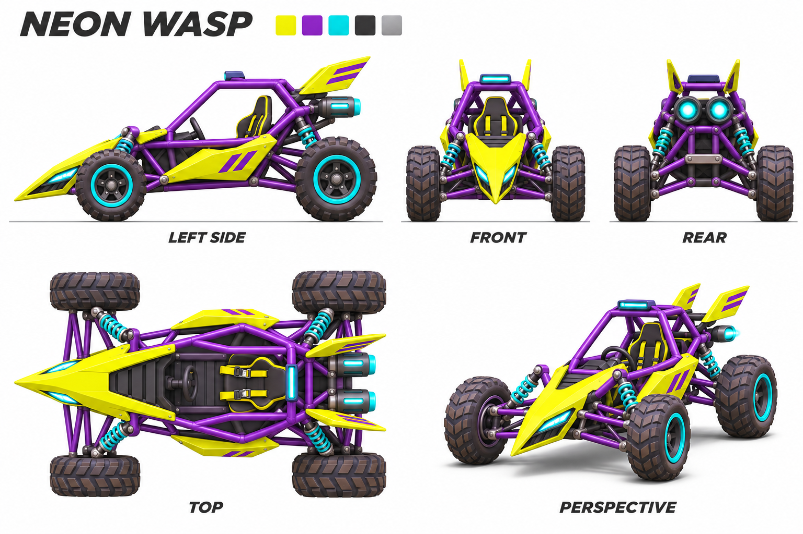

NEON WASP
3.25 m long · 1.95 m wide
body yellow
#E9EF00cage violet #8624C8accent cyan #00D7E8rubber #29292Fmetal #A7ABB2Silhouette priority: a narrow pointed yellow nose, lots of open space between the chassis and wheels, purple cage, and TWO separated yellow rear fins.